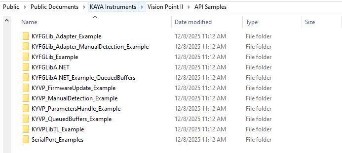
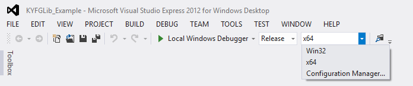
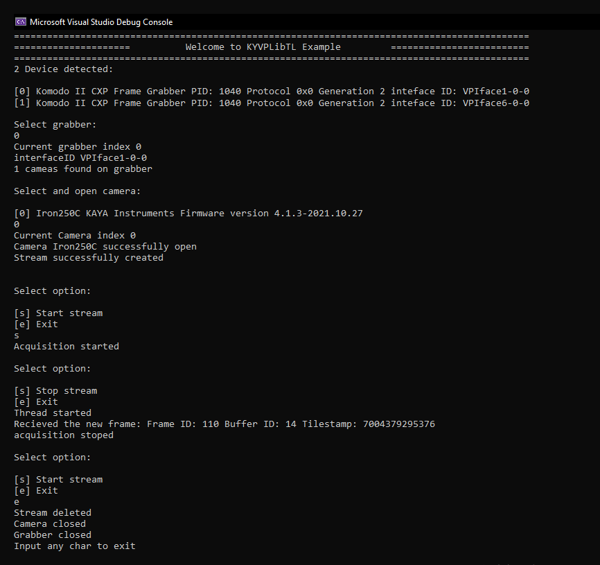
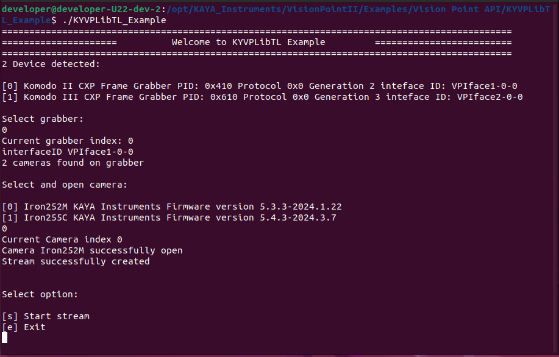

|
KAYA API Book 1.0
KAYA API Book
|
|
KAYA API Book 1.0
KAYA API Book
|
| Vision Point II API example | Description |
|---|---|
| KYFGLib_Adapter_ManualDetection_Example | Example of using Adapter to run Vision Point legacy code under Vision Point II API using Manual Detection feature. |
| KYFGLib_Adapter_Example | Example of using Adapter to run Vision Point legacy code under Vision Point II API with Queued Buffers approach. |
| KYFGLib_Example | Example of using Adapter to run Vision Point legacy code under Vision Point II API with Cyclic Buffers approach. |
| KYFGLibA.NET | Example of using Adapter to run Vision Point legacy code under Vision Point II API with Cyclic Buffers approach. |
| KYFGLibA.NET_Example_QueuedBuffers | Example of using Adapter to run Vision Point legacy code under Vision Point II API with Queued Buffers approach. |
| KYVP_FirmwareUpdate_Example | Example demonstrating KAYA PCIe device firmware update procedure. |
| KYVP_ManualDetection_Example | Example demonstrating the correct procedure for Define device manually. |
| KYVP_ParametersHandle_Example | Example shows how to handle cameras parameters using KYVP ParametersHandler library. |
| KYVP_QueuedBuffers_Example | Example for Queued Buffers image acquisition using KYVPLibTL and KYVP ParametersHandler library. Best API sample for acquitance with VP II API. |
| KYVPLibTL_Example | Example demonstrating transport layer operations. Requires camera registers to be specified. |
| SerialPort_Examples | Example of Serial Port API implementation. Refer to KYFGLibA_SerialPort_Example.cpp for full description. |
Open an example project for Microsoft Visual Studio, provided in the download directory. The "API Samples" directory can be easily found using the shortcut on the desktop or Windows quick search.

Figure 5 – API Samples folderChoose a solution platform according to the operating system, as shown in the image below.

Figure 6 – Visual Studio choosing a solution platformBuild a solution.
Run the application.

Figure 7 – Running an API example for WindowsOpen the Terminal and navigate to directory stored in environment variable $KAYA_VISION_POINT_2_SAMPLE_API.
Change directory to KYVPLibTL_Example.
Type "make" and make sure the KYVPLibTL_Example executable file was created, in the same directory.
To run the API Example, simply type "./KYVPLibTL_Example" followed by "Enter".

Figure 8 – Running an API example for Linux